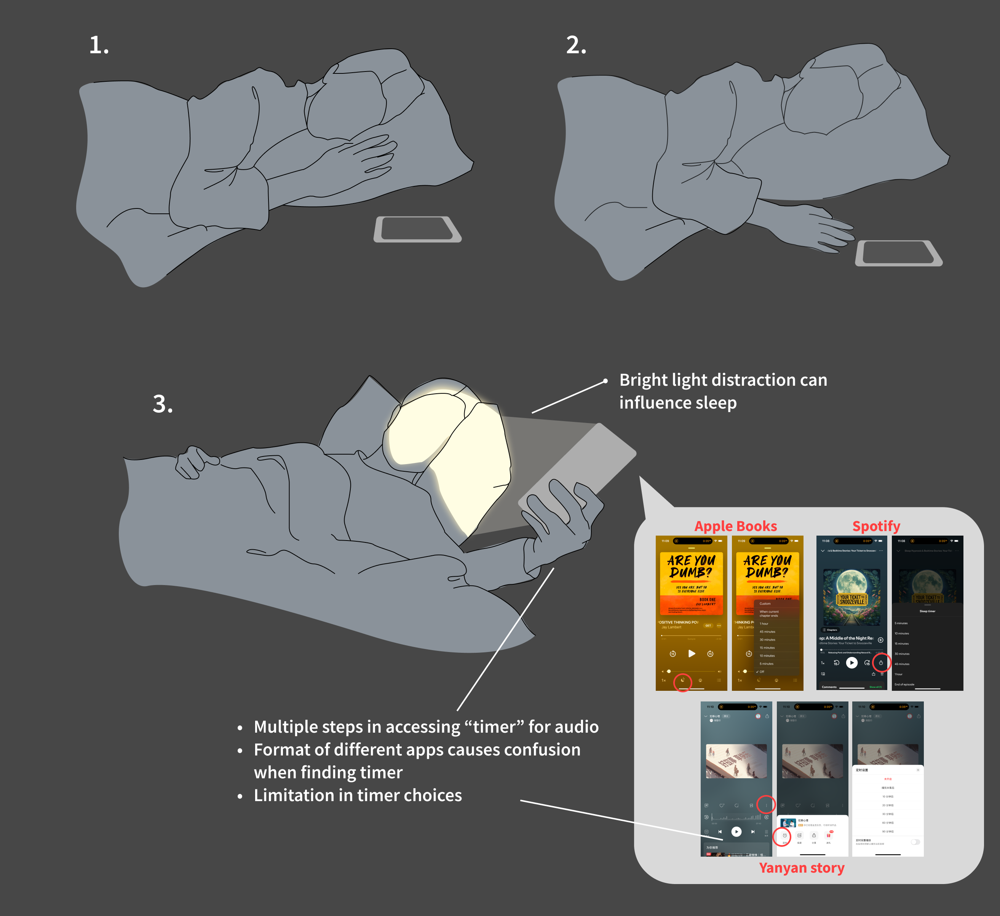
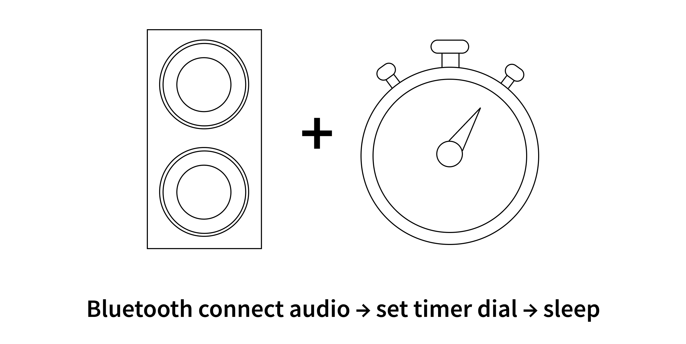

Timer Speaker
Fall 2025
Challenge:
Nighttime listening for audiobooks, podcasts, or white noise often requires navigating apps and screens to set timers, adding unnecessary friction and screen exposure before sleep.
Design:
Designed a bedside timer–speaker that combines Bluetooth audio with a simple dial-based physical timer. The tactile interface removes the need for app-based controls, while a soft knitted wool covering gives the object a warm, calming presence suitable for a bedroom environment. The product was modeled and rendered in Rhino.
Outcome:
Creates a more restful nighttime routine by replacing screen interactions with an intuitive physical interface, turning a common digital task into a simple, comforting bedside experience.

1.Design Context
and Research
Accessing audios before sleep

Current timers in audio applications (Spotify, Apple Book, Yanyan Story) are often hidden, inconsistent, and overly screen-dependent, disrupting an otherwise calming bedtime routine.

2.Modeling process

Rhino was used for both modeling and rendering.
3.Final Design

The form is low, rounded, and soft, designed to feel calm and approachable rather than overly technical. A knitted textile wraps the outer body, giving the speaker a warm, cushioned appearance that fits naturally into a bedtime environment.

The upper surface functions as the speaker, while the recessed, cupped center acts as a dial timer that can be turned to set listening duration. Light gradually fills the radial openings around the dial to indicate the selected time, making the interaction easy to read in a low-light bedroom setting.